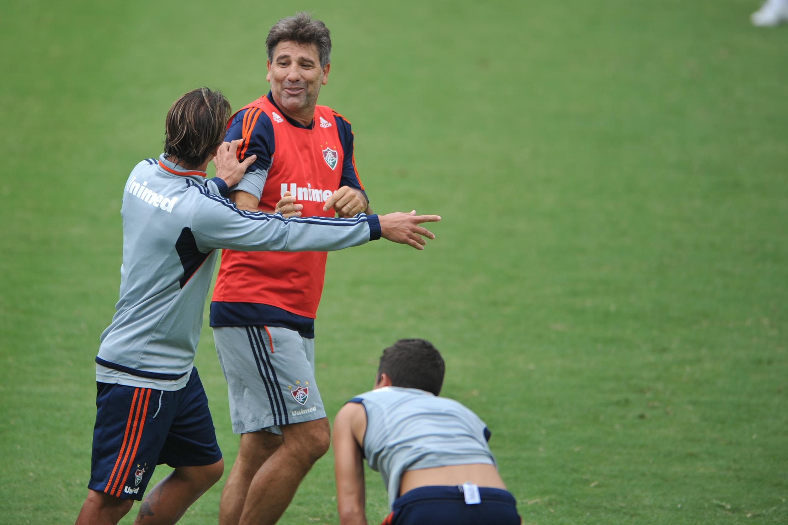

Poucos personagens do futebol brasileiro conseguiram construir uma ligação tão forte entre carreira de jogador e trajetória como treinador quanto Renato Portaluppi. Conhecido nacionalmente também como Renato Gaúcho, o ex-ponta-direita saiu do interior do Rio Grande do Sul para se transformar em herói mundial pelo Grêmio, ganhar títulos por outros grandes clubes, vestir a camisa da Seleção Brasileira e, décadas depois, voltar ao banco de reservas para conquistar novamente a América.
A relação com o Grêmio ocupa o centro dessa história, mas não explica Renato por completo. Flamengo e Fluminense também tiveram capítulos importantes em sua carreira de jogador, enquanto o próprio Tricolor Carioca marcou seu primeiro grande título como treinador. Entre gols decisivos, títulos nacionais e continentais, passagens marcantes e uma personalidade que sempre chamou atenção, Renato se tornou uma figura difícil de separar da história recente do futebol brasileiro.
Quem é Renato Portaluppi
Ele nasceu em 9 de setembro de 1962, em Guaporé, no Rio Grande do Sul. Antes de se consolidar no futebol, chegou a trabalhar em uma padaria em Bento Gonçalves. Sua trajetória esportiva ganhou outro rumo quando foi para Porto Alegre e entrou nas categorias de base do Grêmio.
Promovido ao grupo profissional no início de 1982, Renato ainda precisou esperar por espaço. A grande mudança ocorreu em 1983, quando ganhou protagonismo e começou a construir uma temporada que definiria para sempre sua relação com o clube gaúcho. Atuando pela ponta direita, combinava velocidade, drible e enorme confiança nas jogadas individuais.
A explosão aconteceu justamente no melhor momento possível. O Grêmio conquistou pela primeira vez a Libertadores em 1983 e garantiu o direito de disputar o Mundial Interclubes contra o Hamburgo, então campeão europeu.
A transformação do jogador em lenda
Se existe uma partida capaz de resumir a dimensão de Renato Portaluppi para o Grêmio, é a final mundial de 11 de dezembro de 1983.
No Estádio Nacional de Tóquio, o time gaúcho enfrentou o Hamburgo. Renato abriu o placar no primeiro tempo, os alemães empataram perto do fim e levaram a decisão para a prorrogação. Logo no começo do tempo extra, o camisa 7 voltou a marcar. O Grêmio venceu por 2 a 1 e conquistou o título mundial, com Renato fazendo os dois gols tricolores.
O desempenho transformou definitivamente o atacante em um dos maiores ídolos da história gremista.
A imagem de Renato com a camisa 7, braços abertos depois do gol em Tóquio, atravessou décadas. Mais tarde, ela serviria inclusive de inspiração para a estátua construída em sua homenagem na Arena do Grêmio.
Rio de Janeiro e a construção de Renato Gaúcho
Depois da primeira passagem histórica pelo Grêmio, ele se transferiu para o Flamengo em 1986. A mudança também ajudou a construir uma nova dimensão de sua imagem pública. O jogador que havia se destacado no Sul passou a ter forte identificação com o futebol carioca e consolidou o apelido Renato Gaúcho.
No Rubro-negro, esteve no elenco campeão da Copa do Brasil de 1990. Na semifinal contra o Náutico, por exemplo, teve participação direta no empate por 2 a 2 que garantiu a classificação para a decisão. O Flamengo posteriormente superou o Goiás na final e conquistou sua primeira taça do torneio.
A Copa do Brasil se tornaria uma competição especialmente relevante também na carreira de Renato como treinador. A história do torneio ajuda a dimensionar o peso de conquistas como aquela e pode ser aprofundada na matéria sobre a história e os maiores campeões da Copa do Brasil.
A curta passagem pela Europa
Entre os capítulos da carreira de Renato, a experiência no futebol europeu foi breve. Em 1988, depois de se destacar no Brasil por Grêmio e Flamengo, o atacante foi contratado pela Roma e disputou a temporada 1988/89 no futebol italiano. Foi sua única passagem por um clube europeu.
O brasileiro chegou à Itália cercado de expectativa, mas não conseguiu reproduzir na Série A o protagonismo que havia alcançado no futebol brasileiro. Renato passou uma temporada na Roma e marcou seus gols pelo clube em outras competições: três na Copa da Itália e um na Copa da UEFA. Na principal divisão italiana, passou em branco.
A aventura europeia terminou após aquela temporada. Renato retornou ao Brasil e voltou ao Flamengo em 1989, encerrando uma passagem curta pela Europa que acabou tendo um peso bem menor em sua carreira do que as trajetórias construídas no futebol brasileiro.
Gol de barriga na história do Fluminense
Se o Mundial de 1983 eternizou Renato entre os gremistas, outro lance tornou seu nome inseparável da memória de outro time tricolor.
Em 1995, o atacante marcou o célebre gol de barriga na decisão do Campeonato Carioca contra o Flamengo. A jogada garantiu o título estadual ao Fluminense e se transformou em um dos gols mais conhecidos da história do clássico Fla-Flu.
O episódio também reforçou algo que acompanhou Renato durante praticamente toda a carreira: sua capacidade de aparecer no centro das grandes decisões. Em Tóquio, foram dois gols. No Maracanã, em 1995, bastou um desvio improvável para criar outra imagem eterna.
O “Rei do Rio” e a personalidade que virou parte do personagem
A carreira de Renato Portaluppi não pode ser explicada apenas por gols, títulos e números. No Rio de Janeiro, especialmente a partir do fim dos anos 1980 e durante a década de 1990, ele construiu uma imagem pública que praticamente se confundia com seu futebol: confiante, provocador, irreverente e profundamente ligado ao estilo de vida carioca. Praia, rodas de amigos e futevôlei passaram a fazer parte de uma identidade que ele preservou mesmo depois de deixar os gramados e virar treinador. A ligação ficou tão forte que, décadas depois, continuou sendo frequentemente visto nas praias do Rio jogando futevôlei.
O ponto máximo dessa construção aconteceu em 1995. Naquela temporada, o futebol do Rio vivia uma disputa de estrelas. Romário havia acabado de voltar do Barcelona como campeão mundial e principal nome da Seleção Brasileira na Copa de 1994. Túlio Maravilha era a grande referência do Botafogo, enquanto Valdir Bigode representava o Vasco. Renato chegou ao Fluminense aos 32 anos, depois de uma passagem ruim pelo Atlético-MG e em um momento no qual chegou a considerar encerrar a carreira.
A resposta veio dentro do campo. Renato marcou quatro de seus cinco gols naquele Campeonato Carioca justamente em Fla-Flus e participou diretamente da campanha que terminou com o título tricolor sobre o Flamengo. Depois do histórico gol de barriga na decisão, a disputa simbólica criada em torno das estrelas do campeonato ganhou uma conclusão: Renato foi apresentado como o “Rei do Rio”, expressão eternizada inclusive em uma histórica capa de O Globo após a conquista.
A figura de Renato fazia parte de uma geração em que alguns dos principais jogadores brasileiros também eram personagens muito presentes fora das quatro linhas. Romário talvez tenha sido o exemplo mais próximo. Além de ser uma das maiores estrelas esportivas do país, o Baixinho cultivava forte identificação com o Rio, com as praias e com o futevôlei. Edmundo, por sua vez, construiu uma imagem pública marcada pela intensidade e pela personalidade forte. Os dois chegaram a dividir o ataque do Flamengo em 1995, quando, ao lado de Sávio, integraram uma formação cercada de enorme expectativa. Romário e Edmundo também ficaram associados naquele período ao chamado “Rap dos Bad Boys”.
Renato, Romário e Edmundo ainda compartilhavam outro espaço que se transformou em símbolo daquela geração: as areias cariocas. Registros históricos do futevôlei apontam os três entre os jogadores de futebol que ajudaram a popularizar a modalidade nas praias do Rio durante os anos 1990. O futevôlei, portanto, não era apenas uma atividade ocasional na vida de Renato, mas um elemento que atravessou décadas de sua relação com a cidade.
Por isso, o apelido “Rei do Rio” representa mais do que uma frase criada em torno de um Campeonato Carioca. Ele sintetiza um período no qual Renato conseguiu ocupar simultaneamente o centro do futebol e do imaginário esportivo carioca. Gaúcho de nascimento e maior ídolo de um clube do Rio Grande do Sul, Portaluppi construiu no Rio de Janeiro uma segunda identidade tão forte que praia, futevôlei, irreverência e futebol passaram a fazer parte do mesmo personagem.
A passagem com a camisa “Amarelinha”
Renato também teve uma trajetória relevante com a Seleção Brasileira. Ele disputou 44 partidas e marcou cinco gols com a camisa do Brasil. Entre suas conquistas está a Copa América de 1989.
O atacante também integrou a seleção que disputou a Copa do Mundo de 1990, na Itália. A lista oficial recordada pela CBF traz Renato entre os atacantes convocados ao lado de nomes como Bebeto, Careca, Müller e Romário.
A passagem pela Seleção acrescentou outra dimensão a uma carreira que já havia alcançado o topo do futebol sul-americano e mundial por clubes.
Os números como jogador
A dimensão da carreira de Renato também pode ser observada pelos números acumulados nas diferentes camisas que vestiu.
- Grêmio — 262 jogos e 74 gols
- Flamengo — 210 jogos e 68 gols
- Roma — 33 jogos e 4 gols
- Botafogo — 48 jogos e 20 gols
- Cruzeiro — 18 jogos e 18 gols
- Atlético-MG — 15 jogos e 4 gols
- Fluminense — 72 jogos e 27 gols
- Seleção Brasileira — 44 jogos e 5 gols
- Total — 702 jogos e 220 gols
Os números ajudam a mostrar como a carreira de Renato foi muito além dos momentos mais lembrados. Grêmio e Flamengo concentraram a maior parte de sua trajetória, enquanto passagens mais curtas também produziram marcas expressivas, como os 18 gols em 18 partidas pelo Cruzeiro.
A transformação de jogador á treinador
Depois de encerrar a carreira dentro de campo, em 1999 aos 36 anos, Renato iniciou um novo capítulo no futebol. A transição para técnico acabaria produzindo uma trajetória com identidade própria e novas conquistas de peso.
Um dos primeiros grandes marcos aconteceu no Fluminense. Em 2007, Renato comandou o time na conquista da Copa do Brasil, seu primeiro troféu como técnico. Na decisão contra o Figueirense, o primeiro jogo terminou empatado por 1 a 1 no Maracanã. Em Florianópolis, Roger Machado marcou o gol da vitória por 1 a 0 que garantiu a taça.
A conquista encerrou um longo período sem títulos nacionais do clube e levou o Fluminense de volta à Libertadores. O caminho daquele time pode ser revisitado na campanha completa do título da Copa do Brasil de 2007.
No ano seguinte, Renato conduziu o Fluminense até a final da Libertadores de 2008. O título escapou na decisão, mas a campanha se tornou outro capítulo relevante da ligação entre técnico e clube.
A voltoa ao Grêmio para conquistar como treinador
A história de Renato Portaluppi no clube gaúcho ganhou uma dimensão ainda mais rara quando o grande ídolo como jogador passou a acumular títulos importantes também do lado de fora das quatro linhas.
Em setembro de 2016, iniciou uma passagem que recolocaria o clube no caminho das grandes conquistas. O primeiro troféu veio na Copa do Brasil daquele ano. Para um clube que já possuía enorme tradição no torneio, a conquista representou mais um capítulo de uma relação histórica com o mata-mata nacional. A trajetória gremista na competição pode ser aprofundada na matéria sobre os \títulos do Grêmio na Copa do Brasil\.
Mas a temporada seguinte elevaria o tamanho do feito.
Em 2017, o Grêmio conquistou a Libertadores com Renato no comando. A taça criou uma marca especialmente simbólica: o herói da Libertadores de 1983 como jogador passou a ser também campeão do torneio como treinador.
Renato tornou-se o primeiro brasileiro a ganhar a Libertadores nas duas funções. Poucos personagens do futebol conseguem alcançar tamanho protagonismo em épocas tão diferentes de um mesmo clube.
A sequência vencedora continuou em 2018, com a Recopa Sul-Americana. Ele também acumulou títulos estaduais durante suas diferentes passagens.
Poucos dias depois de completar 64 anos, a trajetóriai ganhou mais um capítulo em sua extensa história com o Grêmio. O ídolo foi oficializado novamente como treinador do clube em 14 de setembro de 2026, cinco dias após o aniversário. O retorno marcou o início de sua quinta passagem pelo comando técnico tricolor: 2010 a 2011, 2013, 2016 a 2021 e 2022 a 2024. O novo contrato foi firmado até dezembro de 2026.
Os números como técnico do Grêmio
A longevidade no comando gremista é outro elemento que diferencia Renato.
Em abril de 2024, o clube o homenageou pela marca de 500 partidas como treinador.
Quando sua passagem terminou ao fim da temporada de 2024, havia chegado a 542 jogos como treinador do Grêmio, mantendo-se como o técnico que mais vezes comandou a equipe na história.
São números que ajudam a colocar sua trajetória em perspectiva. A identificação com o Grêmio não depende apenas das lembranças de 1983: foi reforçada durante décadas, em funções diferentes e com novas conquistas.
- Partidas como treinador do Grêmio: 543
- Títulos: 10
- Copa do Brasil: 1 — 2016
- Copa Libertadores: 1 — 2017
- Recopa Sul-Americana: 1 — 2018
- Campeonato Gaúcho: 5 — 2018, 2019, 2020, 2023 e 2024
- Recopa Gaúcha: 2 — 2019 e 2023
- Gre-Nais como treinador até o fim de 2024: 32
- Vitórias em Gre-Nais: 12
- Empates em Gre-Nais: 12
- Derrotas em Gre-Nais: 8
O retrospecto nos clássicos considera os Gre-Nais disputados por Renato como treinador do Grêmio até 19 de outubro de 2024.
Um símbolo da ligação com o Grêmio
Em março de 2019, Renato Portaluppi recebeu uma das maiores homenagens que um clube pode oferecer a um ídolo: uma estátua.
A obra foi inspirada na comemoração de um de seus gols contra o Hamburgo no Mundial de 1983. A estrutura possui 4,10 metros de altura, incluindo sua base, e está instalada na esplanada da Arena.
A homenagem ganhou força depois das novas conquistas como treinador, especialmente a Copa do Brasil de 2016 e a Libertadores de 2017. O jogador decisivo de Tóquio havia conseguido retornar décadas depois e liderar uma nova geração de campeões.
A relevância para o futebol brasileiro
Renato Portaluppi ocupa uma posição singular porque sua história não cabe em apenas uma função.
Como jogador, foi campeão da Libertadores e protagonista absoluto do Mundial de 1983. Viveu anos marcantes no futebol carioca, conquistou a Copa do Brasil com o Flamengo, marcou o histórico gol de barriga do Fluminense e defendeu a Seleção Brasileira.
Como treinador, conquistou a Copa do Brasil pelo Fluminense, voltou a vencer o torneio pelo Grêmio, levantou a Libertadores e a Recopa Sul-Americana e tornou-se recordista de partidas no comando do clube gaúcho.
A personalidade forte, o estilo confiante e a capacidade de produzir momentos decisivos fizeram de Renato muito mais que um ex-jogador campeão ou um treinador vencedor. Ele se tornou personagem permanente da cultura do futebol brasileiro.
Do jovem ponta que deixou Guaporé para tentar a carreira em Porto Alegre ao técnico que voltou a conquistar a América, existe uma linha que atravessa toda a trajetória de Renato Portaluppi: a presença em momentos que ficam na memória.
O Mundial de 1983 seria suficiente para eternizá-lo no Grêmio. O gol de barriga seria suficiente para garantir um capítulo próprio na história do Fluminense. A Libertadores de 2017, por sua vez, já o colocaria entre os treinadores brasileiros campeões da América.
Renato conseguiu reunir tudo isso na mesma carreira. É por essa combinação de talento, títulos, longevidade, personalidade e identificação com grandes clubes que seu nome permanece entre os personagens mais reconhecíveis e marcantes da história do futebol brasileiro.